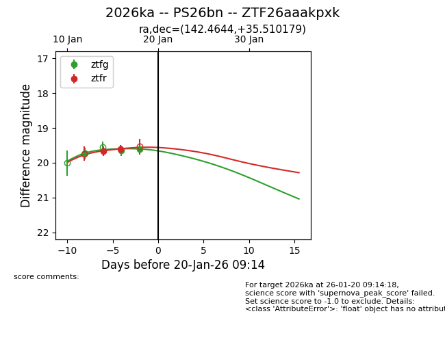
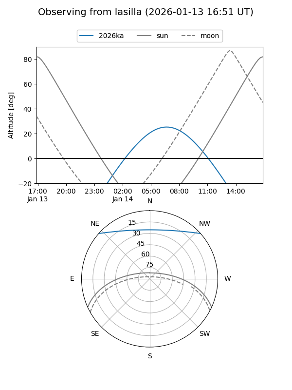
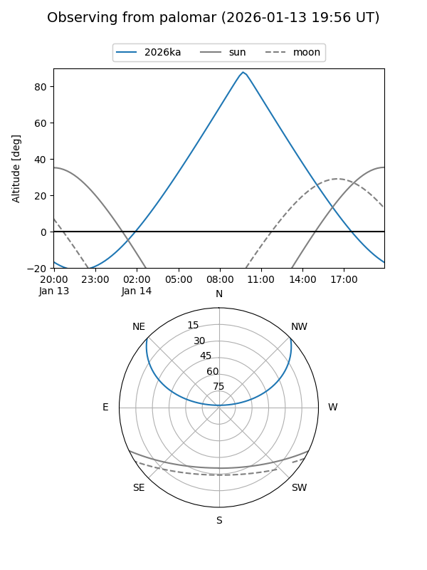
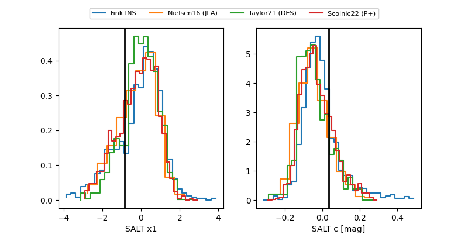

2026ka
Target 2026ka at 2026-01-25 09:41
Aliases and brokers:
FINK: link
Lasair: link
ALeRCE: link
TNS: link
YSE: link
alt names
ZTF26aaakpxk (ztf,fink_ztf)
2026ka (tns,yse)
PS26bn (panstarrs)
Coordinates:
equatorial (ra, dec) = 142.4644,+35.51018
equatorial (HMS+DMS) = 09:29:51.45,+35:30:36.64
galactic (l, b) = (188.8485,+46.60995)
Flags:
Photometry:
last ztfg=19.75, ztfr=19.74
4 ztfg, 4 ztfr detections
Lightcurve

Visibility


Additional plots
